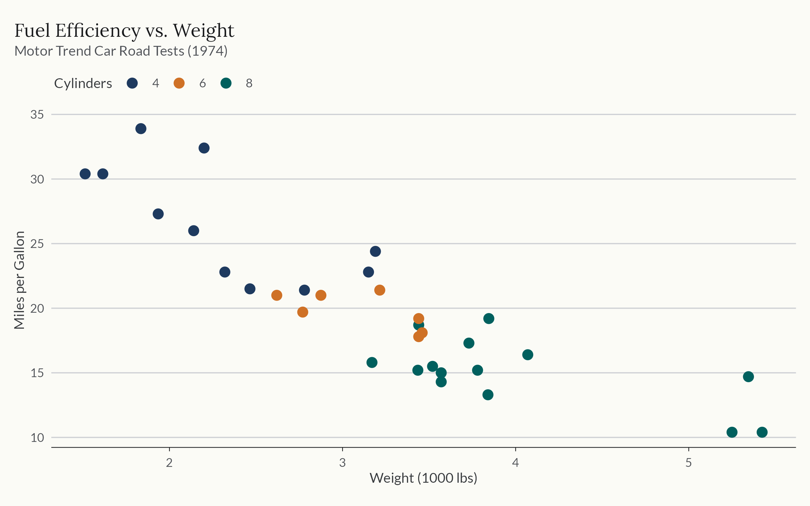
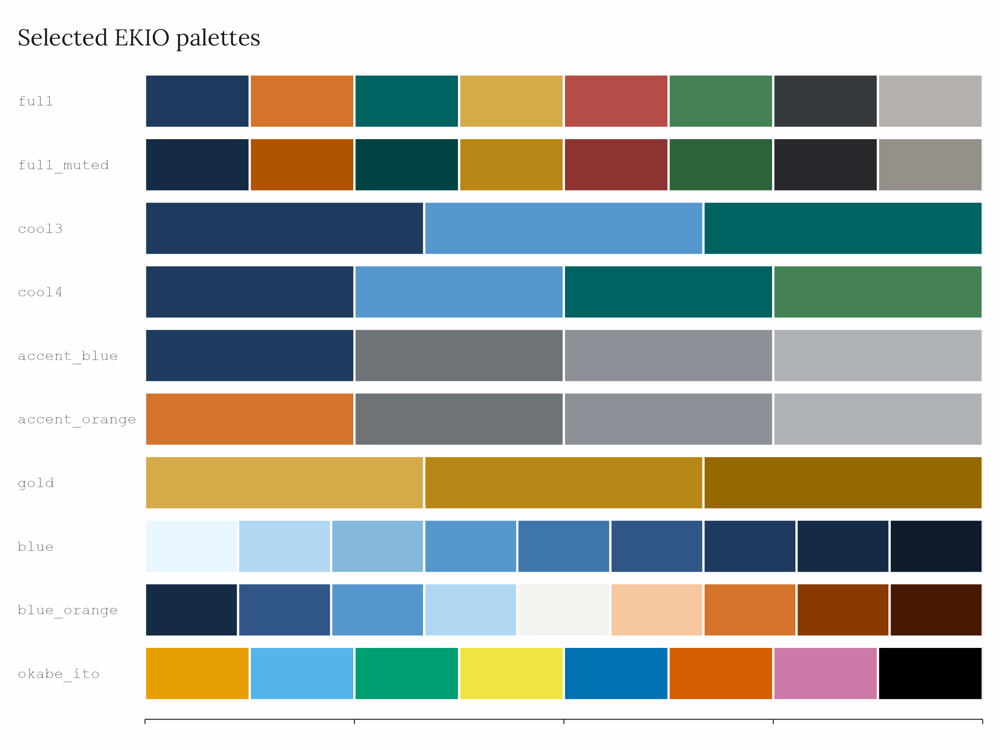
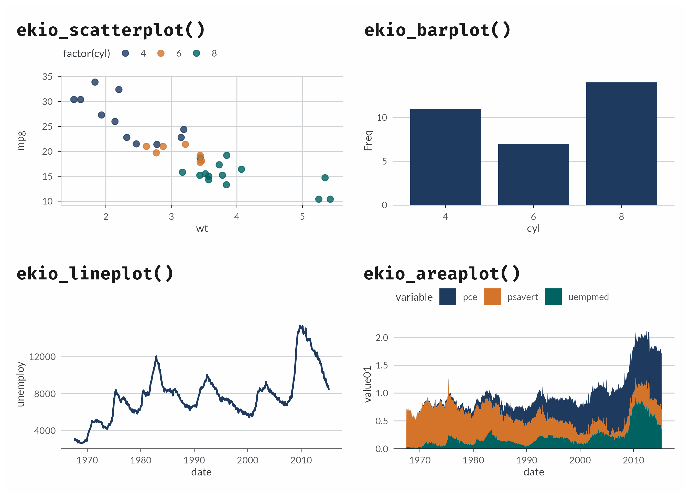

Overview
ekioplot implements EKIO’s visual identity system for data visualization in R.
library(ekioplot)
library(ggplot2)
ggplot(mtcars, aes(wt, mpg, color = factor(cyl))) +
geom_point(size = 3) +
scale_color_ekio_d("full") +
labs(
title = "Fuel Efficiency vs. Weight",
subtitle = "Motor Trend Car Road Tests (1974)",
x = "Weight (1000 lbs)",
y = "Miles per Gallon",
color = "Cylinders"
) +
theme_ekio()
Installation
Install the released version from CRAN:
install.packages("ekioplot")Install the development version from r-universe:
install.packages(
"ekioplot",
repos = c(
"https://viniciusoike.r-universe.dev",
"https://cloud.r-project.org"
)
)Alternatively, install the development version from GitHub.
# install.packages("pak")
pak::pak("viniciusoike/ekioplot")Themes
theme_ekio() applies EKIO’s visual identity to any ggplot2 plot, building on theme_minimal() with curated typography, spacing, and color. The grid argument controls which major grid lines are drawn ("y", "x", "xy", or "none").
theme_ekio(grid = "xy")Color palettes
ekioplot ships palettes across five groups, all accessible through a single function. The seven brand scales are generated from one OKLCH specification, so a given shade carries the same visual weight in every family.
Compact categorical palettes ("cool3", "cool4") cover small groups; "full_muted" provides a quieter eight-color alternative. Variable-size accent palettes keep blue or orange prominent against two to six series.

Scales
Discrete and continuous scales are provided for both color and fill.
# Discrete (categorical palettes)
scale_color_ekio_d("full")
scale_fill_ekio_d("full")
# Continuous (sequential / diverging palettes)
scale_color_ekio_c("blue")
scale_fill_ekio_c("blue_orange")Recipe functions
High-level builders create complete, publication-ready plots with smart defaults.

See more
See vignette("getting-started", package = "ekioplot"), the palette gallery, and the package website at https://viniciusoike.github.io/ekioplot/.